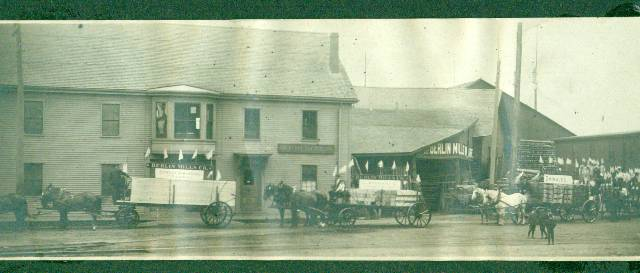

The Family Chronicle
No.63 February 25, 2004
________________

The above photo was among old family photos and was taken in Berlin, New Hampshire. It is undated. We know that Dad and one or more of his brothers ran a cartage business in Portland and that he lumbered in New Hampshire but we do not know if above are his teams.
Venetia Glendenning Doring
Dad’s sister, Venetia, married Uncle Bob Doring. They lived in Falmouth Foreside, Maine, which is just outside Portland and close to the area where the factory outlet stores, including, LL Bean, are located. The
Wauchula Herald Advocate carried the following item on July 8, 1960
Mrs. Doring Dies After Long Illness
Mrs. Venetia Glendenning Doring, widow of R. L. Doring, died Sunday in Bowling Green after a long illness. She was 87.
Mrs. Doring was a native of New Brunswick, Canada. She lived in Bowling Green since 1915, coming there from Portland, Maine.
Survivors include one son, Walter G Doring, Bowling Green; Miss Verna Doring, Bradenton; two brothers, Ray Glendenning, New Brunswick, and Guy W. Glendenning, Bowling Green.
Services were Tuesday afternoon in the chapel of Coker’s Funeral Home with Rev. W. S. Porter officiating. Burial was in Bowling Green Cemetery.
Serving as pallbearers were B. J. Johnson, Francis Bryan, Harold Sellers, Arlis Moye, Houston Durance and Glenn Albritton.
USA Migration
We know the precise date that my mother landed in Portland (January 24,1908); we cannot say the same for my father. We know, however, that he and one or more of his brothers ran a cartage business in Portland prior to 1910. We also know that some of his first cousins by the name of Henry had moved to the Portland area prior to 1870 and that their mother, his Great Aunt Mary Anne (Harley) Henry moved there after her husband died (1970). Dad also had first cousins by the name of Knowles living in the US but I do not know the time period. I believe that Lillian stayed with them when she went to Boston in 1933.
Arthur Mills has done considerable work on the Mills (originally Milne) family tree. Recently he shared some notes on the old home built in 1870. The home was constructed on part of the original grant of 300 acres by King George 3rd to Arthur’s Great Grandfather, James Mills, on September 12, 1818. Art has a copy of the original document.
Art’s father, Jasper Mills, was a fisherman for over 50 years, fishing herring in the spring, salmon from June to mid-August, oysters from September to November and smelts from December to March (ice conditions permitting). Jasper was one of the early fishermen to drift for salmon – that is to fasten a string of gill nets to the boat and to drift in the Miramichi Bay overnight. He also had a contract with Canada Department of Transport to provide, lay and take up navigation buoys in the area. His contract required 25-30 cedar spars (painted red or black annually), five steel 45-gallon drums painted red or black, and hardwood bushes to mark the narrow channels.
When traveling, I usually check the name Glendenning in the local phone directory; it is not unusual to find it. Lately I have been looking for the name Watling; that is a rare name indeed.
Miramichers Away
Art Mills and I had a conversation about what we should do with our genealogy materials and even artifacts with a Miramichi connection. It may be of interest to others who originated in the Miramichi. We are not aware of any museum or other body with an interest. If readers know of such an organization, please let me know and I will mention it in an upcoming issue.
Washboard Pie
Washington pie was a regular dessert at home especially when entertaining. It consisted of two layers of white cake with a filling between. Seems to me that the filling was either raspberry or strawberry preserves but could have been a lemon filling as well. Earl Taylor used tease Mum by calling it “washboard pie”
Earth Quakes
According to my sister, Lillian, an earthquake was felt in Black river in 1925. There was a more recent one but I do not recall the year. Ken was visiting at John’s and John went into the barn for something. While he was in the barn, the quake was felt. The metal siding on the barn banged as though someone was striking it with a piece of two by four.
Tornado
A tornado struck in Upper Black river, I do not know the year, but it damaged the school.
The Chronicle is an occasional newsletter published by Don Glendenning It is designed to share information about my family, community and the times in which I grew up. While every effort is made to be accurate, errors are likely to occur. Comments, enquiries and information may be sent to 62 Queen Elizabeth Drive, Charlottetown, PEI, C1A 3A9. Tel: 902-892-5859 Email: don@glendenning.net Web: www.glendenning.net